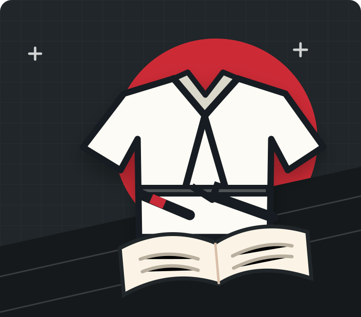
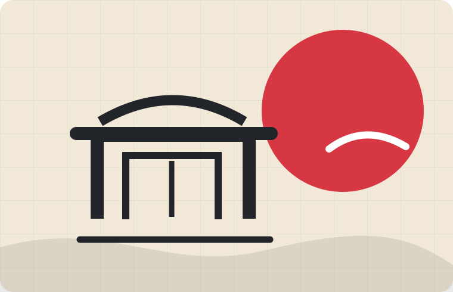
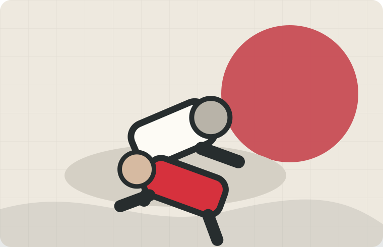

A HISTÓRIA POR TRÁS
DE CADA FAIXA.
O jiu-jitsu tem muito mais para ensinar do que movimentos. Explore suas origens, descubra tradições e coloque seu conhecimento à prova!

APRENDERÉ EVOLUIR!
UMA VIAGEM NO TEMPO.
Da tradição japonesa ao tatame de hoje. Descubra a história do jiu-jitsu em cinco paradas rápidas!
SEU MAPA DE DESCOBERTAS

HÁ MUITO TEMPO...Tudo começou no Japão!
Há muitos anos, diferentes escolas japonesas ensinavam técnicas que valorizavam o equilíbrio, o movimento e o controle. A história do jiu-jitsu começou muito antes de chegar ao Brasil!
Será que a técnica pode ser tão importante quanto a força?
PENSE. OBSERVE. DESCUBRA.
Você conhece esses movimentos? Toque em um cartão e revele o segredo por trás de cada posição ou técnica.

GUARDA FECHADA
Uma defesa cheia de estratégia!
Você sabia que estar por baixo nem sempre significa estar em desvantagem?
Estas ilustrações são educativas, não instruções de execução. Movimentos e técnicas devem ser praticados somente com orientação do professor.
VOCÊ SABIA?
O tatame é cheio de histórias escondidas. Abra os cartões e descubra cinco curiosidades!
POR QUE AS FAIXAS TÊM CORES DIFERENTES?
As faixas marcam etapas do aprendizado. Na graduação infantil da CBJJ/IBJJF existem grupos de cores branca, cinza, amarela, laranja e verde, com variações. A partir dos 16 anos, a sequência é diferente.
PARA QUE SERVEM OS GRAUS NA FAIXA?
Os pequenos graus podem mostrar etapas de evolução dentro da mesma faixa, seguindo os critérios de graduação adotados pelo professor ou pela academia.
POR QUE USAMOS QUIMONO?
O uniforme, também chamado de gi, é composto por casaco, calça e faixa. O tecido resistente permite pegadas durante a prática. Manter o quimono limpo ajuda a cuidar da saúde e a respeitar os colegas.
POR QUE CUMPRIMENTAMOS OS COLEGAS?
Os cumprimentos mostram respeito e reconhecimento. Algumas academias usam reverências; outras, apertos ou toques de mão. Essas tradições variam entre os grupos.
POR QUE CHAMAMOS O JIU-JITSU DE “ARTE SUAVE”?
A expressão japonesa jujutsu é frequentemente traduzida como “arte suave”. Ela lembra a importância do movimento, da flexibilidade e da técnica — não apenas da força.
HORA DO DESAFIO!
Você explorou a história, conheceu posições e descobriu curiosidades. Agora é hora de colocar sua leitura à prova!
HISTÓRIA DO JIU-JITSU
Em 1882, Jigoro Kano criou o Kodokan. O que ele queria ensinar além dos movimentos?
MISSÃO CONCLUÍDA!
0 de 5
O mais importante não é acertar tudo de primeira. É continuar aprendendo!
MAIS QUE UM ESPORTE. UMA COMUNIDADE.
O Projeto Social Vikings Jiu-Jitsu oferece aulas gratuitas no CEU Tremembé — Maria Firmina dos Reis, em São Paulo. Com a dedicação voluntária do professor Marcos, crianças e adolescentes encontram um espaço de convivência, disciplina, respeito e aprendizado.
O Cultura no Tatame nasceu para somar a essa experiência: usar a tecnologia e a leitura para descobrir as histórias por trás da arte suave.
FONTES & REFERÊNCIAS.
Quer investigar um pouco mais? Estas são algumas das fontes usadas para preparar nosso conteúdo.
- Lise & Capraro (2018)Primórdios do jiu-jitsu no Brasil — SciELO↗
- Federação Internacional de JudôJigoro Kano e a história do judô↗
- José Cairus (2011)A origem do jiu-jitsu brasileiro — UDESC↗
- Andrade — Revista MediaçãoHistória, cultura e diferentes linhagens do jiu-jitsu↗
- CBJJ / IBJJFManual de regras, posições e técnicas↗
- CBJJ / IBJJFSistema de graduação e faixas↗
- CBJJ / IBJJFRegras sobre o uniforme↗
- WCJJOOrigens japonesas e o significado de jū-jitsu↗
- ONU — ODS 4Educação de Qualidade↗